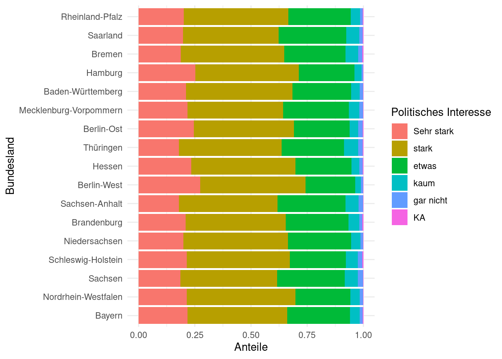

| Fluegel | Fuss | Kopf | Gewicht |
|---|---|---|---|
| 59.0 | 22.3 | 31.2 | 9.5 |
| 55.0 | 19.7 | 30.4 | 13.8 |
| 53.5 | 20.8 | 30.6 | 14.8 |
| 55.0 | 20.3 | 30.3 | 15.2 |
| 52.5 | 20.8 | 30.3 | 15.5 |
| 57.5 | 21.5 | 30.8 | 15.6 |
| 53.0 | 20.6 | 32.5 | 15.6 |
| 55.0 | 21.5 | NA | 15.7 |
Anhang A — Aufgabensammlung
A.1 Erste Schritte
A.1.1 Morphometrische Messungen an Vögeln
In einer Studie wurden 1100 Spitzschwanzammer (Ammodramus caudacutus) vermessen. Wir nutzen einen Teil des Datensatzes (Zuur, Ieno, and Meesters 2009). Die gemessenen Variablen sind Fluegel, Fuss (Tarsus), Kopf, Gewicht. Leider gibt die Datenquelle die Messeinheiten nicht an. Die Daten sind wie folgt:
- Erstellen Sie jede Variable einzeln mithilfe der Funktion
c(). - Wie viele Vögel sind in der Tabelle zu finden. Nutzen Sie dazu die Funktion
length(). Sehen Sie in der Hilfe nach, wie man diese benutzt. - Führen Sie alle Variablen zu einem einzelnen Datenobjekt, einem
tibblezusammen mithilfe der Funktiontibble()aus dem R-Pakettibble.
A.2 Einführung in die Darstellung von Daten
A.2.1 Pinguine
- Laden Sie die Bibliotheken
tidyverseundpalmerpenguinsmithilfe der Funktionlibrary(). - Laden Sie den Datensatz
penguinsmithilfe der Funktiondata(). - Sehen Sie sich den Datensatz an.
- Plotten Sie ein Streudiagramm der Variablen Flossenlänge
flipper_length_mmauf der \(x\)-Achse und der Variablen Körpergewichtbody_mass_gauf der \(y\)-Achse. - Beschriften Sie die Grafik sinnvoll.
- Färben Sie die Punkte je nach Art unterschiedlich ein mithilfe der Variablen
species.
Sie sollten die gleiche (bis auf die Farbauswahl) Grafik erhalten, wie in der Vorlesung 🤓.
A.3 Daten in R einlesen und aus R speichern
A.3.1 Politbarometer 2021: Einlesen von Fremdformaten
Es gibt viele verschiedene Statistikpakete (z. B. SAS, SPSS, Stata), die mit grafischen Oberflächen arbeiten. Da die Analysen darin nicht reproducible sind (weil mit der Maus zusammengeklickt), empfehlen wir diese nicht. Dennoch gibt es manchmal interessante Datensätze, die in den Formaten dieser Statistikpakete vorliegen. ACHTUNG: Diese Aufgabe ist anspruchsvoll!
In dieser Übung lernen Sie das Paket haven kennen, das solche Formate einlesen kann. Haven ist Teil von tidyverse, muss aber extra installiert und geladen werden.
- Laden Sie die Bibliotheken
tidyverseundhaven.
Wir beschäftigen uns mit dem Datensatz “Politbarometer 2021”. Das Politbarometer kennen Sie bestimmt aus dem ZDF. Das sind Telefonumfragen, die seit 1977 etwa monatlich von der Forschungsgruppe Wahlen für das ZDF durchgeführt werden. Wir sehen uns die Daten aus dem Jahr 2021 an. Sie sind für Lehre und Forschung frei. Sie müssen sie jedoch selbst herunterladen, die Nutzungsbedingungen lesen und ihnen zustimmen. Die Daten gibt es hier: https://doi.org/10.4232/1.14464.
- Laden Sie unter “Downloads/Datasets” (rechts oben) den Datensatz “ZA7856_v1-1-0.dta.zip Stata (Dataset) 1.9 MB” herunter. Dafür werden Sie sich einmalig (und kostenlos) anmelden müssen.
Das ist ein komprimierter Datensatz des Statistikpakets Stata. Speichern Sie den Datensatz in Ihrem “Daten”-Ordner und entpacken Sie ihn dort. Es wird ein Ordner namens ZA7856_v1-1-0.dta erstellt, in dem Sie die Datei “ZA7856_v1-1-0.dta” finden. Das ist der eigentliche Datensatz.
- Den Datensatz einlesen mit der Funktion read_dta(). Passen Sie den Pfad zur Datei an, da ich für die Übung eine andere Verzeichnisstruktur habe!
gesis <- read_dta('Daten/ZA7856_v1-1-0.dta/ZA7856_v1-1-0.dta')Wie viele Beobachtungen und Variablen enthält der Datensatz?
Die Variablennamen sind nichtssagend. Um den Datensatz zu verstehen, laden Sie auf der GESIS-Seite das Codebook herunter (rechts oben bei Downloads). Die Variablennamen sind in der “Tabelle 1: Variablenkorrespondenzliste Politbarometer 2021” gelistet.
Wir werden gemeinsam die Variablen richtig umbenennen und die kategorialen Variablen zu Faktoren ändern. Gehen Sie durch den Code Zeile für Zeile durch, und erklären Sie, was dieser macht.
gesis_short <- gesis %>%
rename(Befragtennummer = V2,
Erhebungsmonat = V4,
Erhebungswoche = V5,
Bundesland = V6,
Erhebungsgebiet = V7,
Einwohner = V8,
Polit_interesse = V124) %>%
mutate(Erhebungsmonat = as_factor(Erhebungsmonat),
Erhebungswoche = as_factor(Erhebungswoche),
Bundesland = as_factor(Bundesland),
Erhebungsgebiet = as_factor(Erhebungsgebiet),
Einwohner = as_factor(Einwohner),
Polit_interesse = as_factor(Polit_interesse)
) %>%
select(Befragtennummer,
Erhebungsmonat,
Erhebungswoche,
Bundesland,
Erhebungsgebiet,
Einwohner,
Polit_interesse)Wie hat sich der Typ der kategorialen Variablen im Datensatz
gesis_shortgegenüber dem ursprünglichen Datensatzgesisverändert?Speichern Sie den neuen Datensatz
gesis_shortmitwrite_delim()ab.
A.4 Exploration von kategorialen Daten
A.4.1 Politbarometer 2021: Das Interesse für Politik
Wir analysieren den Datensatz, den Sie in der vorherigen Übung geladen und vorbereitet haben.
- Laden Sie nun den kurzen Datensatz
gesis_shortmit der passenden Bibliothek ein. Sie müssen vorher natürlich diese Bibliothek mitlibrary()laden.
Untersuchen Sie den Datensatz nach dem Laden. Wie sind die kategorialen Variablen kodiert (chr odr fct)? Warum? Sehen Sie in der Hilfe von
read_delimnach.Wir müssen nach dem Einlesen die kategorialen Variablen erneut in Faktoren umwandeln. Diese Information geht durch das Speichern mit
write_delim()und das erneute Einlesen mitread_delim()verloren. Wandeln Sie die VariableBundeslandin einen Faktor um. Wenn Sie mit der Funktionas_fcator()arbeiten, ist die Reihenfolge der Merkmalsausprägungen (der unterschiedlichen Werte einer kategorialen Variablen) standardmäßig so, wie diese im Datensatz erscheinen. Das ist für die Bundesländer ausreichend.Wie viele Personen wurden pro Bundesland im Politbarometer im Jahr 2021 befragt?
Wir wollen nun wissen, wie das Politikinteresse in den Bundesländern ausgeprägt ist. Dafür sehen wir uns die Antworten auf die Frage “Wie stark interessieren Sie sich für Politik, …”. Die Antworten sind in der Variablen
Polit_Interesseenthalten. Wie haben die Befragten abgestimmt?Die Reihenfolge der Merkmalsausprägungen ist unlogisch. Das müssen wir ändern. Bei dieser Variablen gibt es eine logische Reihenfolge: Sehr stark, stark, etwas, kaum, gar nicht, KA. Letzteres steht für keine Angabe. Nutzen Sie den folgenden Code, um die Variable
Polit_interessein einen Faktor mit richtiger Reihenfolge der Merkmalsausprägungen umzuwandeln.
gesis_short <- gesis_short %>%
mutate(gesis_short <- gesis_short %>%
mutate(Polit_interesse = factor(Polit_interesse, levels = c('Sehr stark', 'stark', 'etwas', 'kaum', 'gar nicht', 'KA'))))Wiederholen Sie nun die Aufgabe 5.
Vergleichen Sie die Antworten zwischen den Bundesländern. Ist das Interesse der Bürger ähnlich? Warum ist das schwer zu beantworten?
Wir pirschen uns an die relativen Häufigkeiten heran. Was macht der nachfolgende Code? Sehen Sie gegebenenfalls in der Hilfe nach.
gesis_short %>%
count(Bundesland, Polit_interesse) %>%
pivot_wider(names_from = Bundesland, values_from = n)Der nächste Schritt ist es, die relativen Häufigkeiten (Anteile) für jedes Bundesland auszurechnen, um die obige Frage zu beantworten. Erklären Sie, was der nachfolgende Code macht:
gesis_short %>%
count(Bundesland, Polit_interesse) %>%
group_by(Bundesland) %>%
mutate(Anteil = n / sum(n)) %>%
select(-n) %>%
pivot_wider(names_from = Bundesland, values_from = Anteil)Zurück zu unserer Frage: Ist das Interesse der Bürger in allen Bundesländern ähnlich?
- Beantworten Sie die Frage jetzt auch grafisch, indem Sie ein Balkendiagramm plotten. Es soll so aussehen:

Dafür können Sie folgende Code-Fragmente ergänzen:
ggplot(data = ___, mapping = aes(y = ___, fill = ___)) +
geom_bar(position = position_fill(reverse = TRUE)) +
labs(___) +
theme_minimal()Was macht geom_bar(position = position_fill(reverse = TRUE))?
A.5 Exploration von numerischen Daten
A.5.1 Umweltdaten entlang der dänischen Küste
Die Datei “Temperatur.csv” aus Zuur, Ieno, and Meesters (2009) enthält Messungen von Temperatur, Salinität und Chlorophyll a an 31 Orten entlang der dänischen Küste. Der Datensatz kann hier heruntergeladen werden. Sie bekommen ihn aber bereits über ILIAS gestellt. Die Daten stammen vom dänischen Institut RIKZ (Monitoringprogramm MWTL: Monitoring Waterstaatkundige Toestand des Lands). Die Messungen wurden zwischen 1990 und 2005 durchgeführt, mit einer Häufigkeit von 0–4 Mal pro Monat je nach Jahreszeit.
- Lesen Sie den Datensatz “Temperatur.csv” (auf ILIAS) ein.
- Konvertieren Sie die Spalte Date in ein richtiges Datumsformat und plotten Sie die Temperaturen pro Station (
facet_wrap()) als Zeitreihen. - Berechnen Sie die Anzahl der Messwerte, Monatsmittelwerte der Temperatur für alle Stationen, sowie die Standardabweichungen. Tipp: innerhalb von
summarize()müssen Sien = n()schreiben, um die Anzahl der Messwerte zu erhalten. - Stellen Sie die Monatsmittel der Temperatur als Linien dar. Tipp: Um die Montasnamen darzustellen, nutzen Sie den folgenden Code
scale_x_discrete(limits = as_factor(1:12), labels = month.abb). Hängen Sie ihn mit einem+an. Was macht dieser Code? - Beschriften Sie die Grafik sinnvoll.
- Fügen Sie die Standardabweichungen als Band hinzu.
A.5.2 Quantile
Wir beschäftigen uns mit dem Datensatz possum im Paket openintro.
Laden Sie die Bibliothek und anschließend den Datensatz.
Berechnen Sie
- Das 1. Quartil
- Das 3. Quartil
- Den Median
Der Körper- und Kopflängen.
Stellen Sie die Körper- und Kopflängen als Boxplots nebeneinander dar. Nutzen Sie dazu die Bibliothek
patchwork.Stellen Sie die beiden Variablen als Streudiagramm dar (Körperlängen auf die \(x\)-Achse).
Berechnen Sie den linearen Korrelationskoeffizienten mit der Funktion
cor().
A.6 Lineare Regression
Wir arbeiten mit den Possum-Daten aus dem Paket openintro.
Laden Sie das Paket und den Datensatz. Zusätzlich werden sie
tidyverseundbroombenötigen.Wir wollen die Kopflängen der Tiere mithilfe der Körperlänge vorhersagen (wie in der Vorlesung). Passen Sie das Modell an.
Plotten Sie den Residualplot. Gibt es auffällige Muster im Plot?
Sehen Sie sich die Parameter des Models und den Determinationskoeffizienten an. Interpretieren Sie beides.
Nun möchten wir die Kopflängen nur mithilfe des Geschlechts der Tiere vorhersagen. Wiederholen Sie die vorherigen Schritte.
Vergleichen Sie die beiden Modelle. Welches ist besser? Begründen Sie?
Werden die Kopflängen der weiblichen oder der männlichen Tiere besser vorhergesagt? Beantworten Sie diese Frage grafisch mit einem Residualplot. Färben Sie die Residuen sinnvoll ein.
Schwierig: Passen Sie ein Modell mit beiden Prädiktoren an. Tipp: Sie können die Prädiktoren mit einem Plus verbinden, nach folgendem Schema: lm(Zielvariable ~ Prädiktor1 + Prädiktor2, data = Datensatz)
Vergleichen Sie alle drei Modelle. Welches ist besser?
A.7 Umgang mit der Normalverteilung
A.7.1 Simulieren von Daten aus einer Normalverteilung
Simulieren Sie 1000 Werte aus der Standardnormalverteilung. Nutzen Sie dazu die Funktion
rnorm()und stellen Sie die Daten als Histogramm dar. Tipp: Wandeln Sie die Daten in eintibbleum.Die Funktion
dnormberechnet den Wert der Wahrscheinlichkeitsdichte \(f(x)\), also einen Punkt auf der Glockenkurve. Berechnen Sie diesen Wert für \(x = 0.3\) für die Standardnormalverteilung.Die Funktion
dnormkann man dazu nutzen, um die theoretische Normalverteilung über die simulierten Daten aus Aufgabe 1 zu plotten. Nutzen Sie dazu die Funktionengeom_density()undgeom_function(). Diese Aufgabe machen wir gemeinsam.Überprüfen Sie, dass der Bereich \(\pm\) 1.96 Standardabweichungen in einer Normalverteilung 95% der Werte enthält. Zeichnen Sie den Bereich richtig ein.
A.8 Mittelwert der Studiendauer in Werdeschlau
Die Studierendenvertretung in Werdeschlau möchte wissen, wie hoch im Schnitt die Studiendauer an der Uni Werdeschlau beträgt.
Führen Sie eine Befragung von 100 zufällig ausgewählten Studierenden durch. Schätzen Sie aus diesen Daten die Studiendauer und geben Sie ein 95%-Konfidenzintervall an. Berechnen Sie dieses Konfidenzintervall.
- mit Bootstrap
- mithilfe der Normalverteilung. Der Standardfehler des Mittelwerts sei 0.06 Jahre.
Vergleichen Sie die beiden Konfidenzintervalle.
A.9 Chronische Krankheiten
Im Jahr 2013 berichtete die Pew Research Foundation, dass “45% der Erwachsenen in den USA angeben, mit einer oder mehreren chronischen Krankheiten zu leben”. Dieser Wert basierte jedoch auf einer Stichprobe, so dass er möglicherweise keine perfekte Schätzung für den interessierenden Parameter der Grundgesamtheit darstellt. Die Studie gab den Standardfehler mit 1.2% an, und die Normalverteilung kann kann in diesem Fall als Modell verwendet werden (Pew Research Center 2013)..
- Berechnen Sie ein 90%-Konfidenzintervall für den Anteil der Erwachsenen in den USA, die mit einer oder mehreren chronischen Krankheiten leben.
- Stellen Sie das Konfidenzintervall grafisch dar.
- Interpretieren Sie das Konfidenzintervall im Zusammenhang mit der Studie.
A.10 Umgang mit der \(t\)-Verteilung
Finden Sie den kritischen Wert \(t^*_{2}\) für das 95%-Konfidenzintervall. Nutzen Sie dazu die Funktion
qt().Plotten Sie die dazugehörige Verteilung mit
normTail()und markieren Sie den Bereich, der 95% aller Werte enthält.Vergleichen Sie die mit dem kritischen Wert für eine \(t\)-Verteilung mit 18 Freiheitsgraden.
A.11 Mittelwert der Laufzeiten beim Cherrys Blossom Race
Beim Cherrys Blossom Race laufen die Teilnehmer ein 10-Meilen-Rennen. Wie hoch ist die mittlere Laufzeit (mit 95%-Konfidenzintervall) im Jahr 2017? Der Datensatz run17 enthält die Daten.
- Filtern Sie zuerst nach
event == '10 Mile', da der Datensatz mehrere Rennen enthält (Hilfe lesen!). - Ziehen Sie eine Zufallsstichprobe von 100 Läufern und rechnen Sie die Laufzeit
net_secin Minuten um. - Überprüfen Sie die Anforderungen an die Daten. Welches Modell dürfen Sie nutzen?
- Berechnen Sie die Punktschätzung und das Konfidenzintervall.
A.12 Mittelwert der Laufzeiten beim Cherrys Blossom Race – mit infer
Lösen Sie die obige Aufgabe mit dem Paket infer.
A.13 \(t\)-Test für den Mittelwert
Wird der typische US-Läufer mit der Zeit schneller oder langsamer? Wir betrachten diese Frage im Kontext des Cherrys Blossom Race, einem 10-Meilen-Lauf in Washington, DC, der jedes Frühjahr stattfindet. Die Durchschnittszeit aller Läufer, die den Kirschblütenlauf im Jahr 2016 beendeten, betrug 93.29 Minuten (93 Minuten und etwa 17 Sekunden). Anhand der Daten von 100 Teilnehmern des Kirschblütenlaufs 2017 möchten wir feststellen, ob die Läufer bei diesem Lauf schneller oder langsamer werden, oder ob es keine Veränderungen gibt.
Lösen Sie die Aufgabe mit infer.
A.13.1 Bodenverdichtung
Schwere landwirtschaftliche Maschinen können beim Bearbeiten des Bodens zu Bodenverdichtung führen. In einem randomisierten Design wurden zufällig Parzellen auf einem sonst homogenen Feld mit einer schweren Maschine bearbeitet (compacted). Auf allen Parzellen wurde danach die Lagerungsdichte bestimmt. Aus langjährigen Messungen ist der Mittelwert des unverdichteten Bodens bekannt und beträgt 1.3 [g/cm³]. Die Lagerungsdichte (auch Trockenrohdichte) ist ein Maß für Bodenstruktur und gibt das Verhältnis der Trockenmasse eines Bodens zu seinem Volumen. Sie wird häufig in [g/cm³] gemessen und kann als ein Indikator für Bodenverdichtung genutzt werden. Eine Erhöhung der Lagerungsdichte ist ein Indikator für Verdichtung. Der Datensatz ist in der Datei “bd_compaction_simple.csv” gespeichert.
- Überprüfen Sie, ob sich die Lagerungsdichte auf den bearbeiteten Feldern erhöht hat.